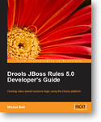
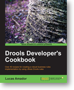

Packt Publishing reaches 1000 IT titles and celebrates with an open invitation
Packt Publishing, the publisher of several Drools books and an active open source supporter, is celebrating the release of its 1000th IT book during this weekend.
As part of the celebration they are offering free ebook downloads to registered users and users that register until September 30th.
Here are the Drools books they published:
|  |  |
Congratulation to Packt and thank you for your support! Happy reading to all of you!
Their full press release:
PRESS RELEASE
28th September 2012
Packt Publishing reaches 1000 IT titles and celebrates with an open
invitation
Birmingham-based IT publisher Packt Publishing is about to publish its 1000th
title. Packt books are renowned among developers for being uniquely practical
and focused, but you’d be forgiven for not yet being in the know – Packt books
cover highly specific tools and technologies which you might not expect to see
a high quality book on.
Packt is certain that in its 1000 titles there is at least one book that everyone
in IT will find useful right away, and are inviting anyone to choose and
download any one of its eBooks for free over its celebration weekend of 28-
30th Sep 2012. Packt is also opening its online library for a week for free to give
customers an easy to way to research their choice of free eBook.
Packt supports many of the Open Source projects covered by its books through
a project royalty donation, which has contributed over $400,000 to Open
Source projects up to now. As part of the celebration Packt is allocating
$30,000 to share between projects and authors as part of the weekend
giveaway, allocated based on the number of copies of each title downloaded.
Dave Maclean, founder of Packt Publishing:
“At Packt we set out 8 years ago to bring practical, up to date and easy to use
technical books to the specialist tools and technologies that had been largely
overlooked by IT publishers. Today, I am really proud that with our authors
and partners we have been able to make useful books available on over 1000
topics and make our contribution to the development community.”